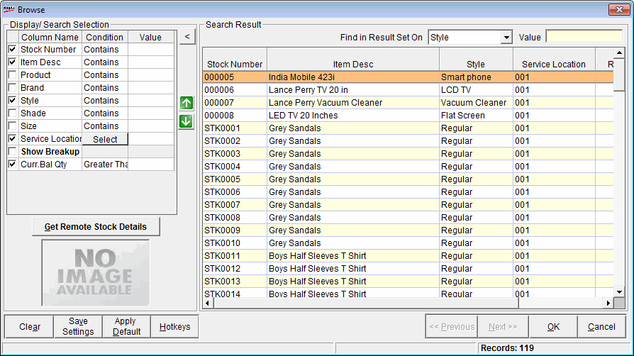
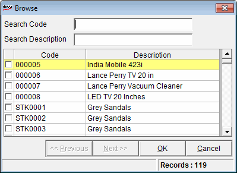
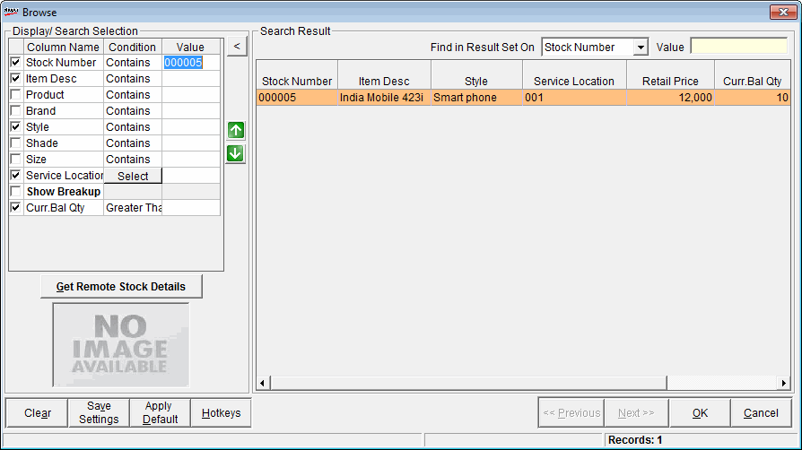
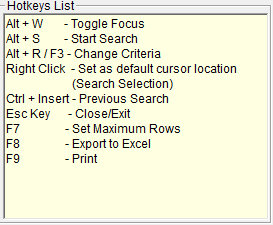

Remote Item Search enables you to know the quantity and other stock details of items located in a different location and also within the store. The important aspect is to know if the stock item’s quantity in the remote location.
How to reach: Sales > Remote Item Search
The Remote Item Search window is displayed.

Display/Search Selection: Enter the relevant values in the respective parameter fields for the required item search. This section consists of three columns, Column Name, Condition and Value. The fields, Stock Number, Item Desc, Style, Service Location and Curr Bal Qty are selected by default and displayed with Retail Price and Reserved Qty under the Search Result area.
Column Name: The name of the classification field is displayed.
Condition: This drop down field allows you to select the required condition, which are Contains, Start With, End With, Equal to, Not With, Is Empty.
Value: Enter the required value(s) for the selected field(s) to display the details under Search Result. If you do not know what to enter under Value, click F2 to browse the field details.
Note: In some of the fields related to the Item Classification, say, Product, you can press F2 again to list the catalogued values to select from. Further you can click F2 again to sub-browse the details for the associated item classification.
The catalogued values for the Item Classification Product is displayed.

The results can be thus filtered hierarchically. For e.g. if the Product is selected as condition by clicking F2, then you can click F2 against Style and select the required corresponding style value.
Select the required stock
A typical browse window is displayed.

Note: The stock number is displayed under Value in the Display /Search Selection frame.
Service Location: Click Select to select the service location as defined in the HO/Chain Store menu or defined by HO itself. It is also used to find the stock items and quantities located in another location.
Show Breakup: Select this condition to display the description of the local, default location or not.
Get Remote Stock Details: Click to display the stock details in remote locations for the selected showrooms.
Note: The filtering is mandatory either based on Stock Number or Style to display the details of the remote showrooms.
Save Settings: To save the filter conditions last used. These filter conditions will be automatically displayed while using the browse again. This feature is useful when you use the same filter criteria repeatedly. In case you have to change the filter conditions, click on Clear.
Press Enter or double click on the item to be selected.
Note: In an item search, if you want the list of items obtained in the previous search, press Ctrl+Insert in the Advanced Item Search window.
Apply Default: Click to apply the saved settings as default
Hotkeys: Click to view the list of hot keys.
